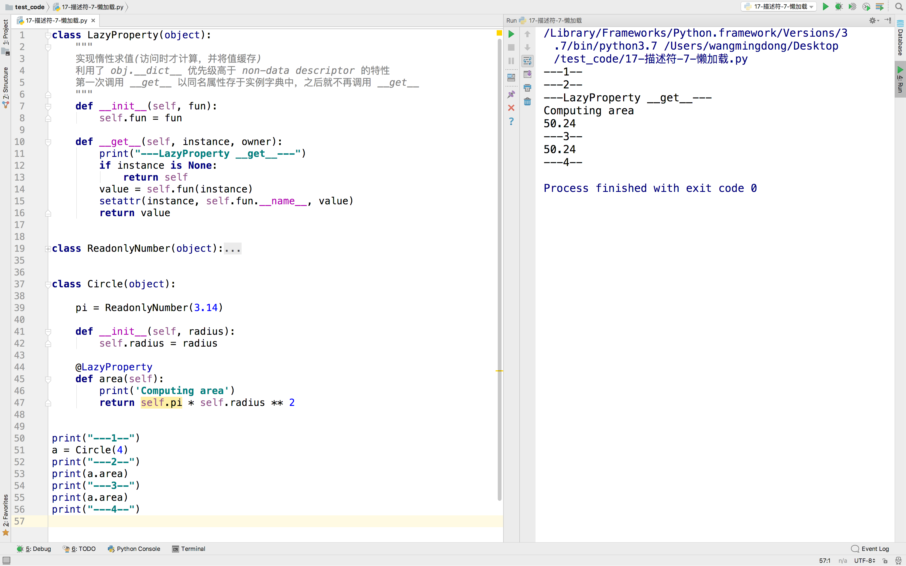

应用
1. 实现@classmethod
# 尝试完成 classmethod
class classmethod_new(object):
def __init__(self, func):
self.func = func
def __get__(self, instance, owner):
print(self.func, instance, owner)
# return self.func # 此方法不能实现
# return self.func(owner) # 这是不可以的，而是要用
def call(*args):
self.func(owner, *args)
return call
class A(object):
M = 100
def a(self):
print("----a 是实例方法----")
@classmethod_new
def b(cls):
print("----b 是类方法方法1----")
print(cls.M)
print("----b 是类方法方法2----")
@classmethod_new
def c(cls, num1, num2):
print("----c 是类方法方法1----")
print(cls.M + num1 + num2)
print("----c 是类方法方法2----")
# def d():
# print("----d 是静态方法----")
obj = A()
obj.b()
A.b()
obj.c(11, 22)
说明
1. 当Python解释器执行到底19行时，即定义A类时，就已经开始通过元类要创建这个类对象
所以就需要将A类中的所有的类属性、方法都要通过字典的方式创建到type这个默认的元类中
所以当遇到第25、26行时，就要通过装饰器确定此时b到底指向谁，此时b=classmethod_new(b)
2. 在执行classmethod_new时，创建了一个对象(其实就是描述符)
3. 当执行第42行diam时，可以分解为2步骤
3.1 先要调用obj.b，得到一个返回值
3.2 执行上一步得到的返回值，即返回值()
4. 在执行3.1时，需要得到一个返回值，又因为在通过实例对象调用类方法时，可能有实参进行传递，所以就需要
这样一个函数，技能够调用原来b指向的函数，又能够再传递数据时接收数据，此时就用到了闭包
注意：此题代码的精髓就在第12行定义的那个闭包(请细细体会)
5. 在执行3.2时，就调用了第12行的定义的闭包，其又调用了之前的b指向的函数，从而完成类方法的功能
2. 应用惰性计算
class LazyProperty(object):
"""
实现惰性求值(访问时才计算，并将值缓存)
利用了 obj.__dict__ 优先级高于 non-data descriptor 的特性
第一次调用 __get__ 以同名属性存于实例字典中，之后就不再调用 __get__
"""
def __init__(self, fun):
self.fun = fun
def __get__(self, instance, owner):
print("---LazyProperty __get__---")
if instance is None:
return self
value = self.fun(instance)
setattr(instance, self.fun.__name__, value)
return value
class ReadonlyNumber(object):
"""
实现只读属性(实例属性初始化后无法被修改)
利用了 data descriptor 优先级高于 obj.__dict__ 的特性
当试图对属性赋值时，总会先调用 __set__ 方法从而抛出异常
"""
def __init__(self, value):
self.value = value
def __get__(self, instance, owner):
return self.value
def __set__(self, instance, value):
raise AttributeError(
"'%s' is not modifiable" % self.value
)
class Circle(object):
pi = ReadonlyNumber(3.14)
def __init__(self, radius):
self.radius = radius
@LazyProperty
def area(self):
print('Computing area')
return self.pi * self.radius ** 2
print("---1--")
a = Circle(4)
print("---2--")
print(a.area)
print("---3--")
print(a.area)
print("---4--")
运行效果：
